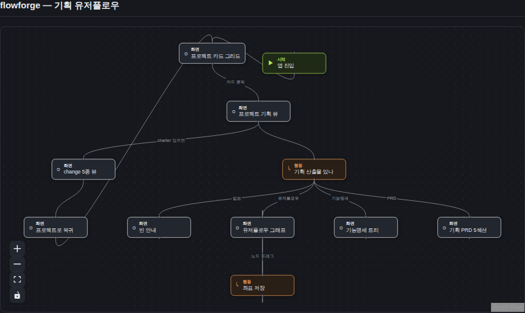

검증일: 2026-06-29T01:15:11+09:00 · 환경: server(jest 36/36 + 런타임 curl 8905) PASS · web(Playwright 실픽셀 8904, PROJECTS_ROOT/DOCS_ROOT=/home/gaegul) PASS · android SKIPPED(레이어 없음) · ios SKIPPED(macOS 필요) · run: run-20260629-0115
PASS 11 · FAIL 0 · 검증 안 함 0 · SKIPPED 0
| Requirement | Scenario | Layer | 검증 수단 | 탐지 근거(basis) | 결과 | 증거 |
|---|---|---|---|---|---|---|
| openspec-plan이 유저플로우를 의존성 순서로 생성한다 (generation) | 기능명세 다음 단계로 유저플로우 생성 (features.md 기능 있을 때 user-flow/<group>-v1.md Mermaid 생성) | server | SKILL.md(agentic-harness) 유저플로우 단계·게이트 grep + 도그푸딩 flowforge/docs/planning/user-flow/main-v1.md 실생성 확인 | grep openspec-plan/SKILL.md '## 산출물 — 유저플로우(3단계)'·게이트·Mermaid규약; main-v1.md 파일 존재+GET 200(노드11) | ✓ PASS | SKILL.md L124 '## 산출물 — 유저플로우 (3단계)', L131 'user-flow 스키마 — Mermaid flowchart', L151 '절차(유저플로우 생성)' 게이트(기능 ≥1). 도그푸딩 main-v1.md → GET /api/docs/flowforge/planning-user-flow 200 (nodes 11 edges 12). |
| 유저플로우는 Mermaid flowchart 문법을 따른다 (generation) | Mermaid flowchart 코드블록 포함 (flowchart TD/LR 선언 + 노드정의 + --> 엣지) | server | 도그푸딩 main-v1.md grep('```mermaid','flowchart TD','-->') + 빌더가 파싱해 GET 200 (코드블록 실제 유효) | main-v1.md L6 '```mermaid' L7 'flowchart TD' + 노드/--> 존재; buildDocsPlanningUserFlow가 코드블록 추출 성공(노드11) | ✓ PASS | main-v1.md: ```mermaid 코드블록 안에 flowchart TD + 'Start(["앱 진입"]) --> Grid["프로젝트 카드 그리드"]' 등 노드정의·--> 엣지. 빌더 파싱 성공 → 노드11 엣지12. |
| 유저플로우는 Mermaid flowchart 문법을 따른다 (generation) | 노드 타입이 모양으로 구분된다 (시작/페이지/행동 → stadium/box/diamond) | server | 런타임 curl GET kind 집합 = {start, screen, action} 확인 (Mermaid 모양 ([..])/[..]/{..} → kind) | GET /api/docs/flowforge/planning-user-flow node kinds = ['action','screen','start'] (planningUserFlowBuilder 모양→kind 매핑) | ✓ PASS | S5: node kinds = ['action','screen','start']. main-v1.md의 Start([..]) stadium→start, Grid[..] box→screen, HasDocs{..} diamond→action 매핑 입증. |
| flowforge가 Mermaid 유저플로우를 SpecGraph로 파싱해 제공한다 (view) | 유저플로우 그래프 조회 성공 (GET 200 + SpecGraph + layout) | server | 런타임 curl GET 200 + nodes/edges + layout(빈객체) + versions; docs.test 통합 케이스 | GET ?flow=main-v1 → HTTP 200, nodes 11 edges 12 layout {} versions ['main-v1']; docs.test.ts PASS | ✓ PASS | S4: GET 200, nodes 11, edges 12, layout {}, versions ['main-v1']. jest docs.test.ts 통합 케이스 PASS. |
| flowforge가 Mermaid 유저플로우를 SpecGraph로 파싱해 제공한다 (view) | Mermaid 노드 모양이 노드 kind로 매핑된다 (A([..])/B[..]/C{..} → start/screen/action) | server | planningUserFlowBuilder.test 픽스처(모양별 노드→kind) + 런타임 kind 집합 | planningUserFlowBuilder.test.ts 노드 모양→kind 케이스 PASS; 런타임 kinds=['action','screen','start'] | ✓ PASS | 빌더 테스트: ([..])→start, [..]→screen, {..}→action 픽스처 PASS. 런타임 도그푸딩에서 3종 kind 모두 산출. |
| flowforge가 Mermaid 유저플로우를 SpecGraph로 파싱해 제공한다 (view) | Mermaid 엣지가 그래프 엣지로 변환된다 (A-->B, B-->|라벨|C, |라벨| 보존) | server | planningUserFlowBuilder.test(엣지·라벨 픽스처) + 런타임 라벨 보존 확인 | 빌더 테스트 엣지/라벨 케이스 PASS; 런타임 edges 12 중 labeled 7 (카드 클릭/PRD/기능명세/유저플로우 등 보존) | ✓ PASS | S6: edges 12, labeled 7, 라벨 ['카드 클릭','PRD','기능명세','유저플로우']. A-->B(라벨없음)·A-->|라벨|B(라벨보존) 둘 다 변환. |
| flowforge가 Mermaid 유저플로우를 SpecGraph로 파싱해 제공한다 (view) | 유저플로우 파일 없으면 안전한 4xx (없는 group/version → 404, not 500) | server | 런타임 curl 없는 flow → 404; docs.test 파일없음 케이스 | GET ?flow=does-not-exist-v9 → HTTP 404 (500 아님); buildDocsPlanningUserFlow null → 라우트 404 | ✓ PASS | S7: no-such-flow HTTP 404. 빌더가 파일 없으면 null 반환 → 라우트가 404로 안전 응답(500 회피). |
| 드래그 좌표를 overlay JSON에 저장한다 (view) | 좌표 저장 후 재조회 시 반영 (PUT layout → overlay.json 기록 → 재조회 layout 포함, 드래그 실픽셀) | web | Playwright 실픽셀: 카드 클릭→유저플로우 그래프 렌더→노드 드래그→onNodeDragStop→PUT 저장→overlay JSON 11노드 좌표 기록; 런타임 curl PUT 재조회 | Playwright 8904: react-flow 노드 11 렌더, 드래그 후 overlay.json에 11좌표 기록(uflow-x-start {619,191}); 런타임 S8 PUT 200 → 재조회 layout 반영 | ✓ PASS |  |
| 드래그 좌표를 overlay JSON에 저장한다 (view) | overlay 저장은 명세 .md를 변경하지 않는다 (좌표만 쓰고 Mermaid .md 불변) | server | 런타임 PUT 전후 main-v1.md md5 비교 + docs.test overlay-only 케이스 | PUT layout 전후 main-v1.md md5 동일(b160c155...); writeDocsUserFlowOverlay는 .overlay.json만 씀 | ✓ PASS | S9: md5 before=after=b160c155ae8b0d035cb6fbae670864e2. PUT은 main-v1.overlay.json만 쓰고 main-v1.md(Mermaid 명세) 무변경. |
| 쓰기 라우트의 경로안전·입력검증 불변 (view) | 경로 조작 차단 (읽기·쓰기 모두 — project/group/version에 .. → 4xx, 디렉토리 밖 접근 안함) | server | 런타임 curl 경로조작 GET/PUT + group .. + docs.test 경로조작 케이스 | traversal GET 404 · traversal PUT 404 (resolveDocsDir .. 차단) · bad-flow(..) PUT 400 (group 화이트리스트) | ✓ PASS | S10: traversal-GET 404, traversal-PUT 404 (resolveDocsDir 화이트리스트). S10b: flow=../escape PUT 400 (group/version 파일명 화이트리스트). 디렉토리 밖 읽기/쓰기 차단. |
| 쓰기 라우트의 경로안전·입력검증 불변 (view) | 잘못된 layout body 거부 (LayoutOverlay 아닌 body → isLayoutOverlay 실패 4xx, 파일 안씀) | server | 런타임 curl 비정상 body(문자열값/배열) + docs.test body검증 케이스 | bad-body-string PUT 400 · bad-body-array PUT 400 (isLayoutOverlay 런타임검증); docs.test PASS | ✓ PASS | S11: {"a":"notcoords"} → 400, [1,2,3] → 400. isLayoutOverlay가 {id:{x:number,y:number}} 아닌 body 거부, overlay 파일 미작성. |
| Requirement | null | 빈값 | 잘못된타입 | 경계값 | 에러경로 | 동시성 | 대량 | 특수문자 | 판정 |
|---|---|---|---|---|---|---|---|---|---|
| openspec-plan이 유저플로우를 의존성 순서로 생성한다 (generation) | N/A | N/A | N/A | N/A | N/A | N/A | N/A | N/A | ✓ 충분 |
| 유저플로우는 Mermaid flowchart 문법을 따른다 (generation) | N/A | N/A | N/A | N/A | ✓ | N/A | N/A | ✓ | ✓ 충분 |
| flowforge가 Mermaid 유저플로우를 SpecGraph로 파싱해 제공한다 (view) | ✓ | ✓ | ✓ | N/A | ✓ | N/A | N/A | ✓ | ✓ 충분 |
| 드래그 좌표를 overlay JSON에 저장한다 (view) | ✓ | ✓ | ✓ | N/A | ✓ | N/A | N/A | ✓ | ✓ 충분 |
| 쓰기 라우트의 경로안전·입력검증 불변 (view) | ✓ | ✓ | ✓ | N/A | ✓ | N/A | N/A | ✓ | ✓ 충분 |
✓=covered · N/A=해당없음(사유 hover) · ✗=missing. happy-path만이면 검증 불충분 → 최종 FAIL 차단.
| Layer | 상태 | ran | passed | failed | 근거/사유 |
|---|---|---|---|---|---|
| server | ✓ PASS | 9 | 9 | 0 | jest planningUserFlowBuilder+docs.test 36/36 + 런타임 curl(8905) GET/PUT 전 케이스 |
| web | ✓ PASS | 2 | 2 | 0 | Playwright 실픽셀(8904, PROJECTS_ROOT/DOCS_ROOT=/home/gaegul): 카드→그래프11노드 렌더+드래그→overlay 저장, 콘솔에러0 |
| android | – SKIPPED | 0 | 0 | 0 | 적용 불가: Android 프로젝트 아님 |
| ios | – SKIPPED | 0 | 0 | 0 | macOS 필요 |
✓ PASS 통과
archiveGate.open = true (PASS일 때만 true). verify.json이 이 값을 archive 게이트에 전달.
{kind=link}